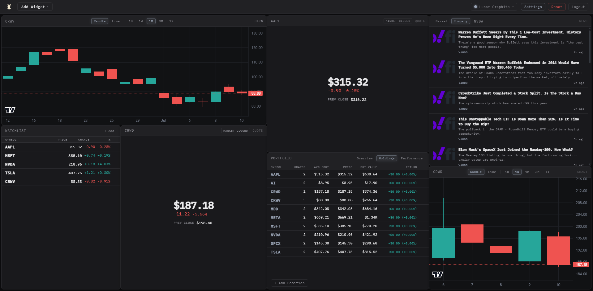
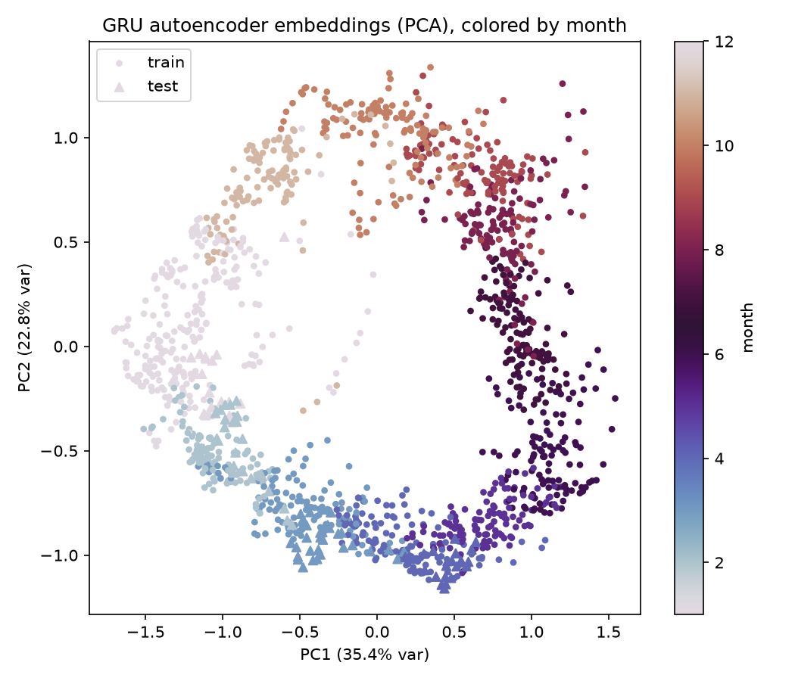

Trading Suite
A more intuitive alternative to traditional trading terminals. Built around the user, allowing them to create and customize dashboards to their liking.
Projects/Independent Research

A more intuitive alternative to traditional trading terminals. Built around the user, allowing them to create and customize dashboards to their liking.

A GRU autoencoder's climate embedding, tested for seasonal structure with joint recurrence plots and surrogate significance testing.

A post-hoc Dynamic Mode Decomposition study investigating whether a convolutional autoencoder trained for simulated pendulum frame reconstruction learns latent representations whose dynamics are predictable by a linear model.
I love Deep Learning, Finance, Mathematics, Software, and doing independent research. My hobbies include making music, drawing, and playing League of Legends.